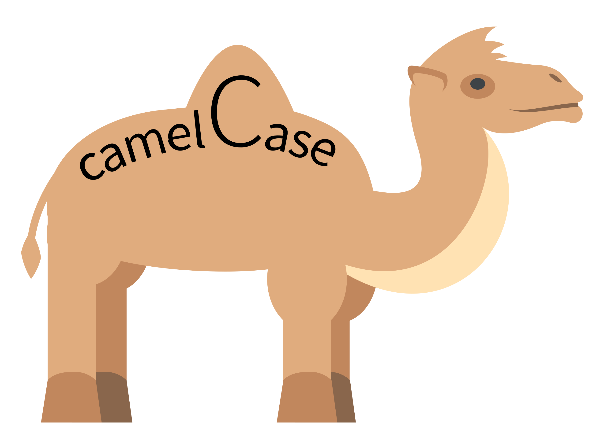

Transcribing data
Use of standard orthography
MiMo is designed to work with Minimal Input. So all you need to do is transcribe using standard orthography (Roman Alphabet).
Sentence-final punctuation
Every line should end with sentence-final punctuation, e.g. a full stop (.), question mark (?), or exclamation mark (!). You may repeat these characters if you wish, e.g. ending a sentence with a double question mark.
MiMo uses sentence-final punctuation to determine when a sentence / utterance ends, and a new one begins. So including sentence-final punctuation is critical.
MiMo uses the convention that a directive (command), e.g. Be quiet! ends in a single exclamation mark, while an exclamative, e.g. What a lovely cake!! ends in a double exclamation mark. MiMo will use these conventions when conducting a search for directives and exclamatives.
Showing speakers
Speakers should be shown with a series of letters followed by a colon (:). There should be no spaces, or punctuation characters. So you could type FAT:, FATHER:, Father:, FATHEROFCHILD:, FatherOfChild:
If you would like to include multiple words in the speaker name, you could use “camel case”, which means that you only use capital letters for the first letter of each word (except the first). This makes the string of letters much more readable.

Punctuation
Use standard punctuation. Show contractions with an apostrophe, e.g. we're having fun, I've eaten already. This will analyse we're as a single word containing two morphemes. If you want MiMo to analyse we and are as two words you would need to write the words out in full, e.g. we are.
You can add other types of punctuation, e.g. commas and dashes. They will be ignored when conducting the linguistic analysis.
Return characters
In accordance with the principle of Minimal Input, MiMo is not very fussy about the formatting of the transcript.
It doesn’t pay attention to return ⏎ characters. So, Text Fragment A, which contains lots of return characters, will be treated exactly the same as Text Fragment B, which includes all the text on one line.
Text Fragment A
MOT: Can you tell what we're cooking ? ⏎
MOT: Can you smell it ? ⏎
CHI: Pasta and chips . ⏎
MOT: Yes . ⏎
MOT: It's not chips . ⏎
MOT: It's pasta and we've got bacon . ⏎
CHI: Oh thanks . ⏎ Text Fragment B
MOT: Can you tell what we're cooking ? Can you smell it ? CHI: Pasta and chips . MOT: Yes . It's not chips . MOT: It's pasta and we've got bacon . CHI: Oh thanks .
Note that it’s not necessary to always specify the speaker. If no speaker is specified at the beginning of the sentence, then MiMo will assume that the sentence is a continuation of the conversational turn of the last speaker. This should greatly help to simplify transcription.
Comments
If you want to include text which does not belong to a speaker you can use comments. These involve placing text inside round brackets, as in the example above. MiMo will not assign word classes to text in round brackets, and will not include this text in the various metrics which it calculates (Mean Length of Utterance, and various lexical metrics)